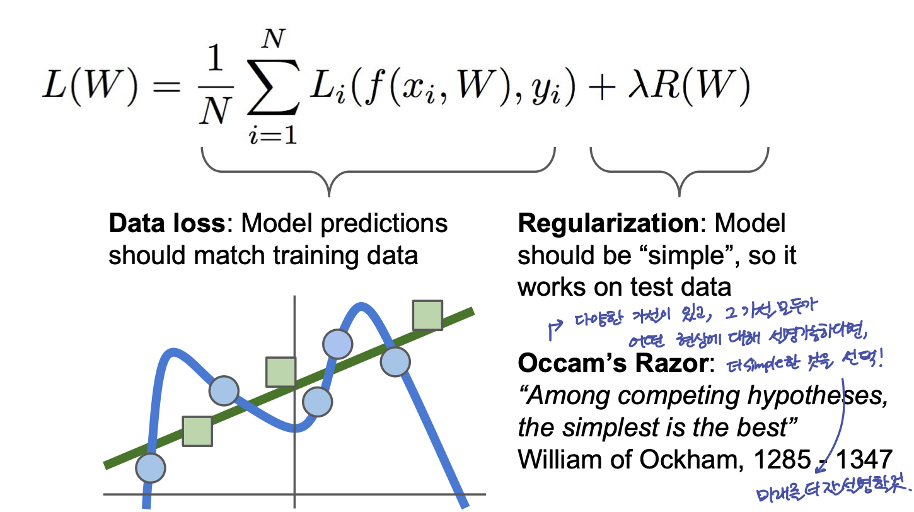

![[GCP] Computing Engine 환경설정](/images/thumbnail.svg)
Lecture 03: Loss Function & Optimization
- 이 글은, Standford University 의 CS231n 강의를 듣고 스스로 정리 목적을 위해 적은 글입니다.
1. Introduction
- Loss Function : 우리가 가지고 있는 W matrix 가 얼마나 안좋은지 정량화(Quantify)
- Optimization : 위의 Loss Function 을 minimize 해서 가장 좋은 parameter (W) 를 찾는 과정
2. Loss Function
주어진 data 가 다음과 같을 때,
$${(x_i, y_i)}_{i=1}^{N}$$
Loss 는 “Average of over examples” 즉,
$$L = \frac{1}{N}\sum_{i}L_i(f(x_i, W), y_i)$$
- 딥러닝 알고리즘의 General Setup
- W 가 얼마나 좋고, 나쁜지를 정량화하는 손실함수 만들기
- W 공간을 탐색하면서 이 loss를 minimize 하는 W 를 찾기
2-1. Loss Example: Multiclass SVM Loss
SVM Loss 는 다음과 같다. 주어진 data example (x_i, y_i) 에 대해서, score vector s 는 다음과 같다.
$$s = f(x_i, W)$$
이 때, SVM loss는
$$L_i = \sum_{j\neq y_i}\begin{cases} 0 \quad\quad\quad\quad\quad\quad\quad if ;s_{y_i} \geq s_j +1 \ s_j - s_{y_i} + 1 \quad\quad otherwise \end{cases} \ = \sum_{j\neq y_i}max(0, s_j-s_{y_i}+ 1)$$
x_i 의 정답이 아닌 클래스의 score (s_j) + 1 (safety margin) 과 정답 클래스 score s_yi 를 비교하여, Loss 를 계산한다.

- SVM Loss 의 최대, 최솟값은 ? min : 0, max : infinite
- W 를 작게 초기화 하면, s 가 거의 0에 가까워 진다. 이 때, SVM Loss 는 어떻게 예상되는가?
- 정답이 아닌 class, 즉 class - 1 개의 score 원소들을 순회하면서 모두 더할 때, score 는 0에 가깝고, 이를 average 취하면 class 갯수 - 1 만큼의 Loss 값이 나온다.
- 이 특징은 debugging strategy 로 사용할 수 있다. 초기 loss 가 C-1 에 가깝지 않으면 bug 가 있는 것으로 의심해볼 수 있다.
- 만약 include j = y_i 이면, SVM Loss 는 어떻게 되는가?
- Loss Funtion 이 바뀌는 것은 아니다. 단지 전체 loss의 minimum 이 1이 될 뿐이므로 해석의 관점에서 관례상 맞지 않아 정답 class 는 빼고 계산한다.
- 우리가 average 를 취하지 않으면?
- 이 역시 바뀌는 것이 없다. 전체 class 수는 정해져 있고, 이를 나누는 average 는 scaling 만 할 뿐이다.
- Loss 를 max(0, s_j - s_yi + 1) ^2 를 사용하면?
- 이는 squared hinge function 으로 때에 따라서 사용할 수 있는 loss function 이다. 다른 Loss function 이며, 이는 위의 loss 와 다르게 해석 할 수 있다. 기존의 SVM loss 는 class score 가 각각 얼마나 차이가 나는지에 대해서는 고려하지 않는 것이라고 한다면, squared 가 들어감으로써, 차이가 많이 나는 score class 에 대해서는 좀더 가중하여 고려하겠다는 의미로 해석 할 수 있다.
2-2. Regularization
만약 위 Loss Function 에 대해서, L = 0 으로 만드는 W 를 찾았다고 할때, 과연 이 W 는 유일한가? 그렇지 않다. W 일 때, L=0 이라면, 2W 역시 L=0 이다. 또한 L을 0으로 만드는 다양한 W 중에서 단지 training data 에만 fit 하는 classifier 를 원하는 것이 아니라, test data에서 좋은 성능을 발휘하는 classifier 를 찾기를 원한다. 이런 Overfitting 을 막기 위해서는 모델의 W 를 다른 의미에서 조절해줄 수 있는 Regularization term 을 추가할 수 있다.
즉, Model이 training set 에 완벽하게 fit 하지 못하도록 Model 의 복잡도에 penalty 를 부여하는 것을 말한다.

Regularization 의 종류들:
- L2 Regularization
- L1 Regularization
- Elastic net(L1 + L2)
- Max norm Regularization
- Dropout
- Batch normalization, stochastic depth
2-3 Loss example: Softmax Classifier (Multinomial Logistic Regression)
deeplearning 에서 훨씬 더 자주 보게 되는 loss 의 종류 중 하나이다. 위에서 살펴본 SVM loss 의 단점은 그 값 자체에 어떤 의미를 부여하기는 힘들다는 점이다. 반면에, Softmax Classifier 는 그 값 자체를 확률적 해석이 가능하기 때문이다. (cf. 콜모고로프의 공리를 통해 softmax 의 layer 의 output 이 확률로 해석 될 수 있다.)
Softmax Function 은 다음과 같다.
$$P(Y=k|X=x_i) = \frac{e^{s_k}}{\sum_j e^{s_j}},\quad where \quad s = f(x_i;W)$$
3. Opitmization
Optimization 을 한마디로 요약하자면, 우리의 loss 를 최소화 하는 W 를 찾기 가 되겠다. 그 방법에는,
- (바보 같은 접근인: 강의표현) Random Search
- Gradient 를 구하는 방법
- Numerical Gradient 수치적 접근 : 이 방법은 근사치를 구하는 것이며, 매우 느린 단점이 있다. 하지만, 쉽게 작성할 수 있다는 장점이 있다.
- Analytic Gradient 해석적 접근 : 미분식을 구해야하는 단점이 있다. 하지만 빠르고 정확하다.
실제로는, Analytic Gradient 방법을 사용한다. 하지만 debugging 을 위해 numerical gradient 를 사용한다. 이를 gradient check이라 한다.
3-1. Gradient Descent & Stochastic Gradient Descent
Gradient Descent 를 방법을 이용해서 optimization 을 진행할 수 있다. 하지만 데이터의 숫자와 차원이 매우 큰 경우, parameter (W) 를 update 하는데 그 연산량이 매우 큰 단점과 위험이 있다. 이를 해결하기 위해 minibatch 를 사용하여 확률적 접근을 사용한다.
4. Image Feature Extraction
CNN 등이 등장하기 전에 Image 에서 Feature 를 뽑아내는 방법에 대해 소개한다. Feature를 뽑아내는 개념으로 생각할 수 도 있지만, Feature Transform 이라는 표현을 사용한다.
- Color Histogram : 이미지의 color distribution 을 사용하여 해당 이미지의 feature 로 사용할 수 있다. (출처: wikipedia ) For digital images, a color histogram represents the number of pixels that have colors in each of a fixed list of color ranges, that span the image’s color space, the set of all possible colors.
- Histogram of Oriented Gradients (HoG) : CNN 이 등장하기 전, 매우 인기있는 Image Feature 중 하나라고 알고 있다. Edge 를 검출하는 방법이다. pixel 사이에, 값의 gradient 가 가장 큰 neighbor 가 edge 일 것이다라는 개념을 사용하여 edge 를 검출한다. 사진을 8 x 8 patch 를 만들어, 각 patch 마다 9 directional oriented gradients 를 계산하여, 이를 feature 로 사용하는 방법이다.
- Bag of Words : NLP 에서도 자주 사용되는 개념인 BoW 에서 차용한 개념으로, 이미지 데이터들에서 일정 크기의 patch 를 모아 clustering 을 통해 visual words (codebook) 을 만든다. 그리고 feature 뽑아내고 싶은 image 를 patch 형태로 바꾸고, codebook 에서 찾아 histogram 을 만들어 이를 feature 로 사용한다.